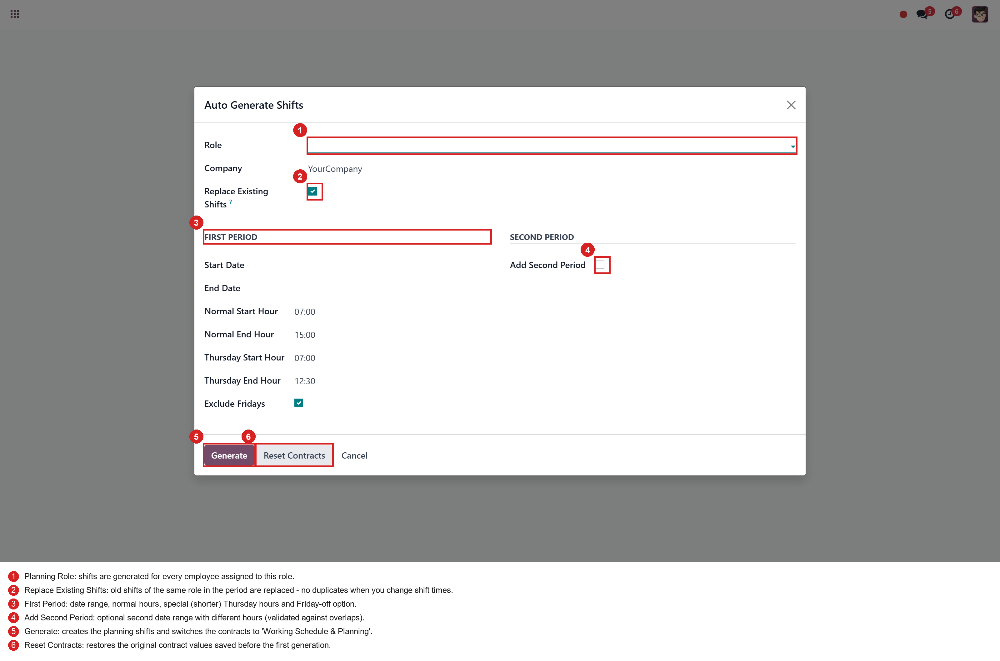
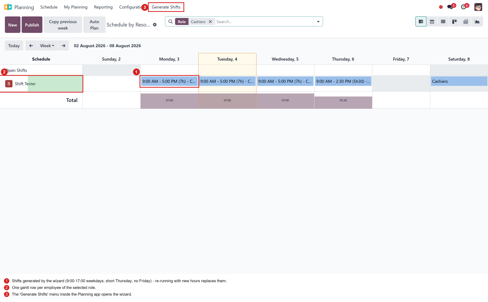
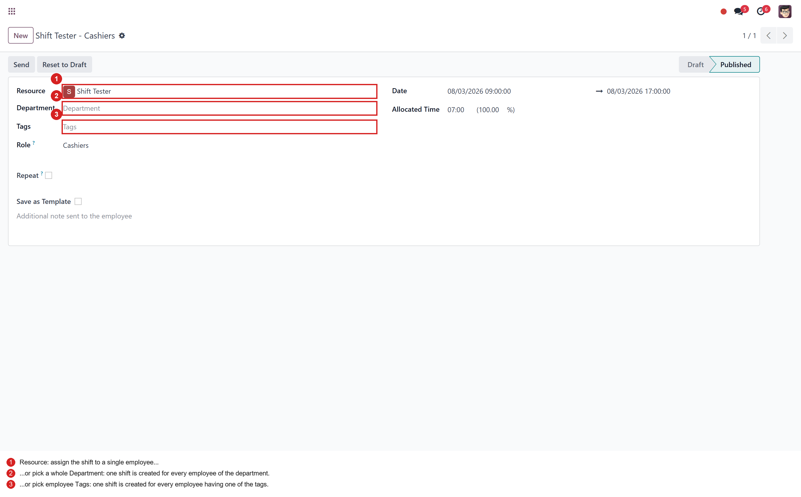
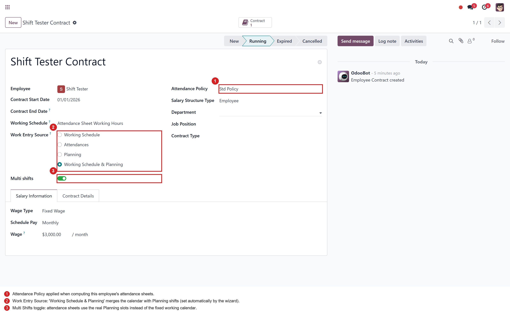
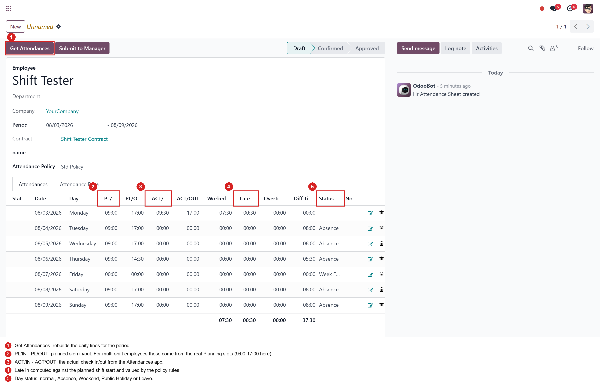
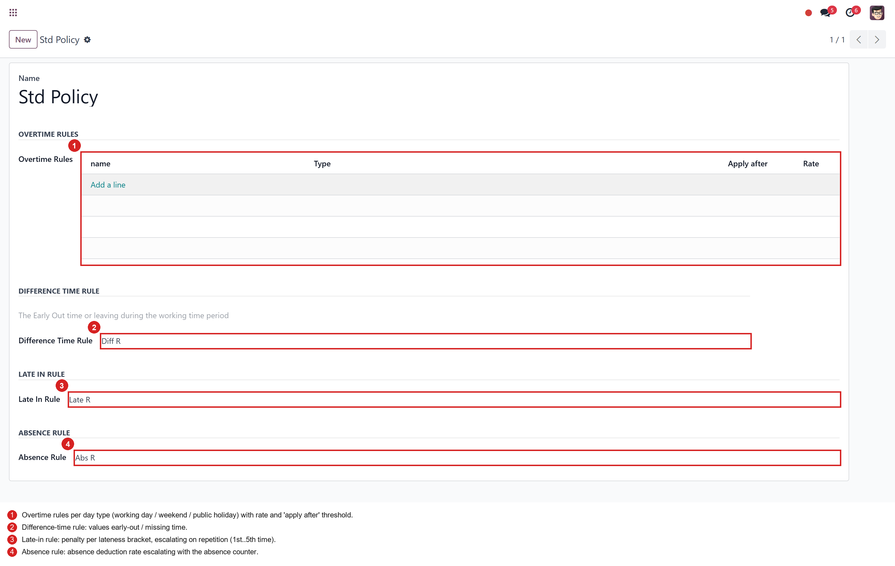

One module for the full shift life-cycle: generate planning shifts per role, plan by department or tags, compute attendance sheets from the real shifts and push the results straight into payroll.
This module replaces and merges four previous modules into a single, consistent application:
| Old module | What it brought |
|---|---|
rm_hr_attendance_sheet |
Attendance sheets & batches, attendance policies (overtime / late-in / absence / difference-time rules) and payslip integration. |
fs_multi_shifts |
Multi-shift contracts: work entries and attendance sheets computed from Planning slots instead of the fixed working calendar. |
planning_shifts_generator |
Wizard that bulk-generates planning shifts for every employee of a role (special Thursday hours, Friday off, optional second period). |
fs_planning |
Create a planning shift for a whole department or for employee tags in one action. |
Open Planning → Generate Shifts. Pick the role, the period and the working hours - Thursday can have its own (shorter) hours and Fridays can be excluded. An optional second period with different hours covers schedule changes during the month (e.g. Ramadan hours). When you press Generate, the wizard creates the daily shifts for every employee of the role and automatically switches their contracts to Working Schedule & Planning + Multi Shifts.

The shifts appear in the normal Planning gantt. Changing the shift times is now safe: run the wizard again with the new hours and the old shifts of that role and period are replaced - never duplicated.

On any planning shift you can pick a Department or employee Tags instead of a single resource - one shift is created for every matching employee in one go.

Each contract carries its Attendance Policy and the Multi Shifts switch. When enabled, attendance sheets and work entries are computed from the employee's real Planning shifts; when disabled, the classic fixed working calendar is used. The wizard sets these fields automatically and Reset Contracts restores the original values.

The attendance sheet compares the planned times (from the Planning slots for
multi-shift employees, from the calendar for the others) with the actual
check-in/check-out records. Late-in, overtime, absence and difference time are valued by
the attendance policy and summarized per sheet. In this example the employee was planned
9:00-17:00, checked in at 9:30 and got 30 minutes late-in.
Approving the sheet creates the payslip with dedicated worked-day lines
(ATTSHOT / ATTSHLI / ATTSHAB / ATTSHDT) used by the bundled salary rules.

Policies group the four rule types: overtime (per working day / weekend / public holiday with an apply-after threshold and a rate), late-in brackets with escalating repetition factors, early-out / difference time and absence rates. Every contract points to the policy used by its sheets.

fs_hr_shifts fully replaces rm_hr_attendance_sheet,
fs_multi_shifts, planning_shifts_generator and
fs_planning. Do not install it together with the old modules on the same
database - uninstall them first (or start from a fresh database), then install this one.